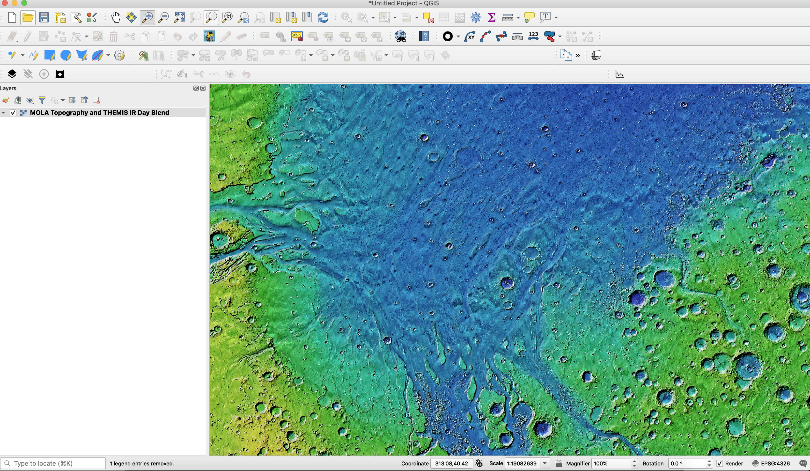
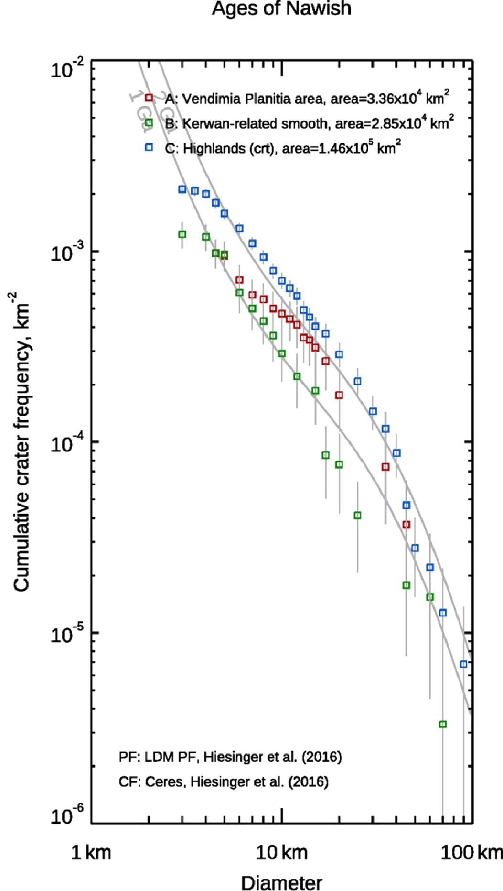
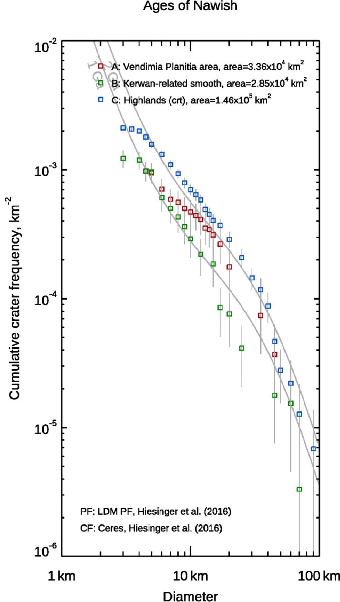
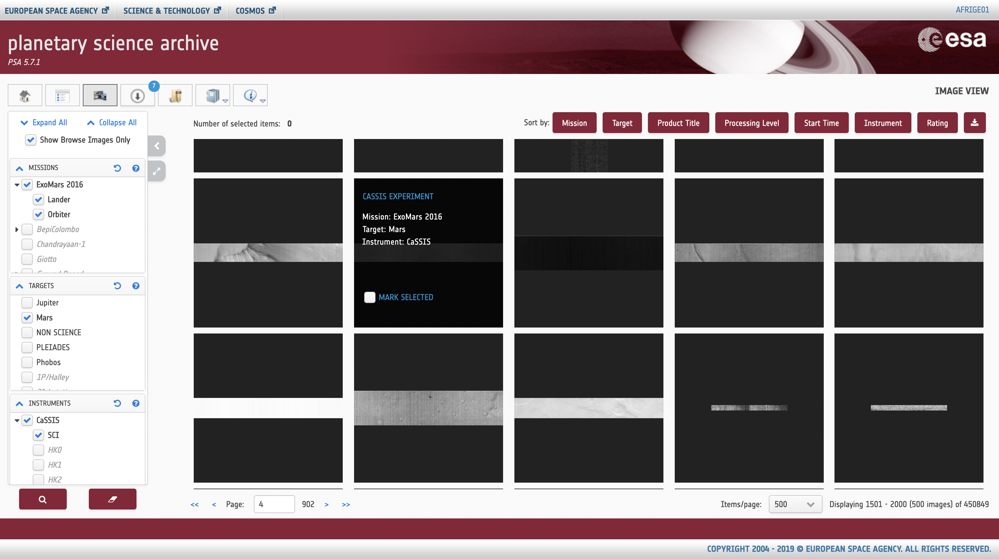
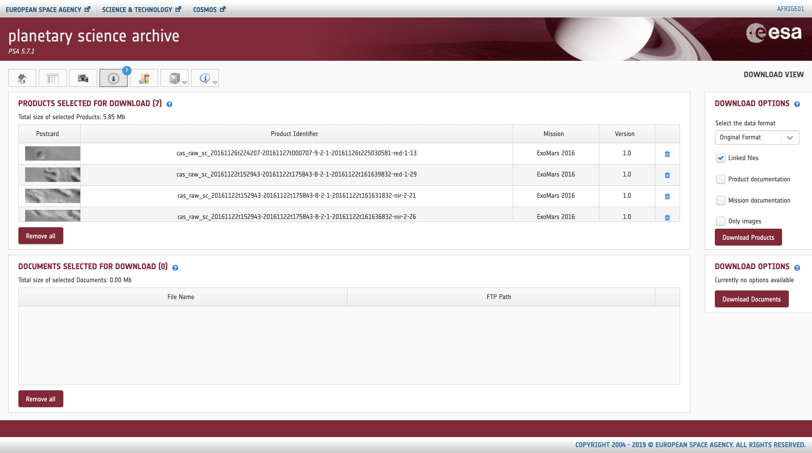
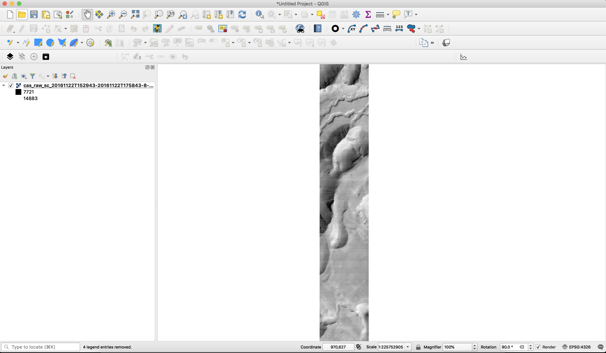

for the Planetary Scientist
held at the OpenPlanetary Data Cafe, EPSC 2019 15-20 September 2019, Geneve - Switzerland
Alessandro Frigeri
Istituto di Astrofisica e Planetologia Spaziali - IAPS
Istituto Nazionale di Astrofisica - INAF
Rome, Italy
alessandro.frigeri@inaf.it / @afrigeri
Development started in 2002 by Gary Sherman
- peculiarities: GUI / Plugins / iPython interface
- License: GNU GPL
- website:http://www.qgis.org
- development: http://github.com/qgis
- support through multi-sponsorship
QGIS is a project within OSGEO
QGIS Features useful to planetary scientist
- OGC Web-Services: WMS, WFS(-T), CSW, WCS
- (Planetary) geologic mapping capabilities
- Stream digitizing
- Geologic symbology available
- Printproof: legends, grids, scales
- Planetary Data System v4 import (through GDAL library).
OWS support in QGIS
USGS WMS basemaps Geologic mapping

e.g. DOI:10.1016/j.icarus.2018.08.015
Crater mapping/statistics
 
 PDS4 support in QGIS
CaSSIS data from PSA and in QGIS
Step one: Select data from PSA (or PDS) PDS4 support in QGIS
CaSSIS data from PSA and in QGIS
Step two: Dowload data from PSA (or PDS) PDS4 support in QGIS
CaSSIS data from PSA and in QGIS
Step three: Visualize PDS4 image data in QGIS Entry point for updates/discussion
A thread on QGIS for planetary mapping has been opened on the openplanetary.org forum
Acknowledgements
A special thanks goes to the all the QGIS/FOSS4G developers, contributors and sponsors, and planetary data users testing these tools!
that's it!
... and that's only the beginning!
Audience: demo of paricular aspect? Questions?